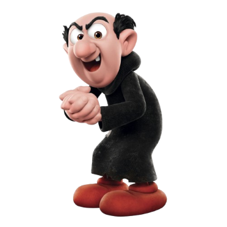
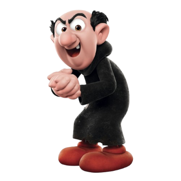
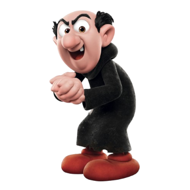
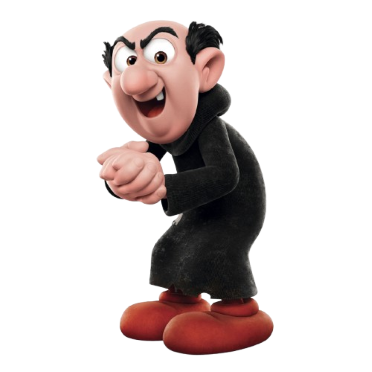

Gargamel is a conniving, evil human wizard, driven by a desire for riches and power as well as a bottomless thirst to capture Smurfs. This fixation started long ago when he dreamed of putting a Smurf into his cauldron to make a philosopher’s stone, which turns lead into gold. After being repeatedly frustrated and humiliated by the Smurfs, his preoccupation has hardened into an obsession. He is the greatest threat to the Smurfs’ existence, but they are also lucky in that Gargamel is sloppy and tends to overreach in his ambition, creating super-complicated traps and outrageous strategies for catching them.